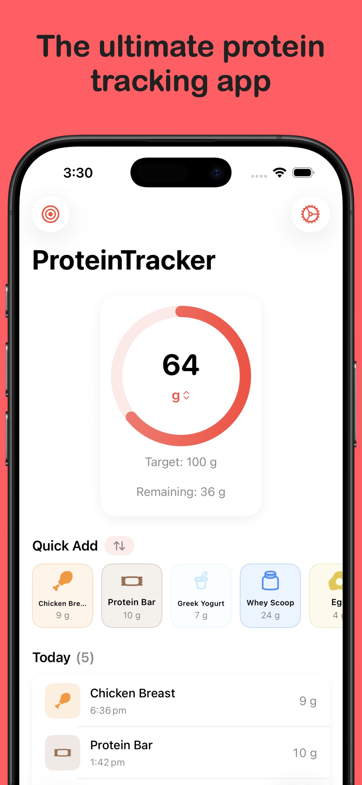
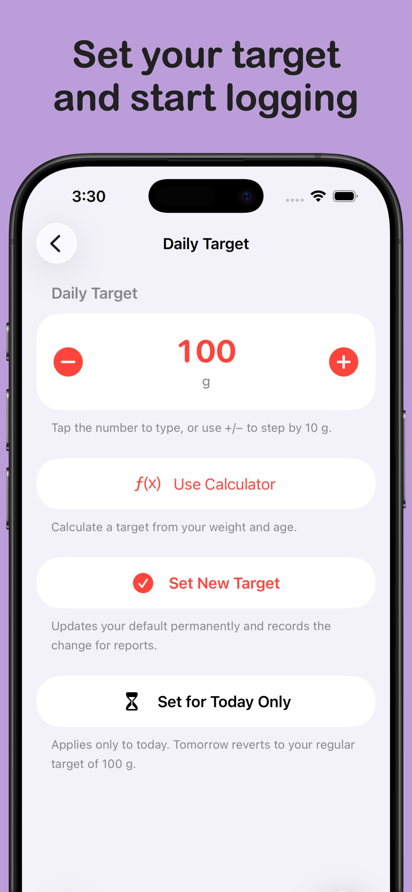
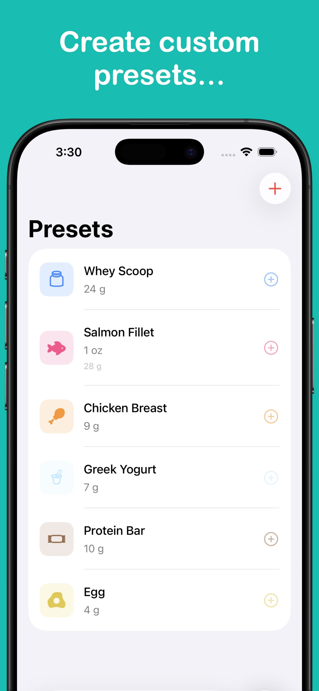
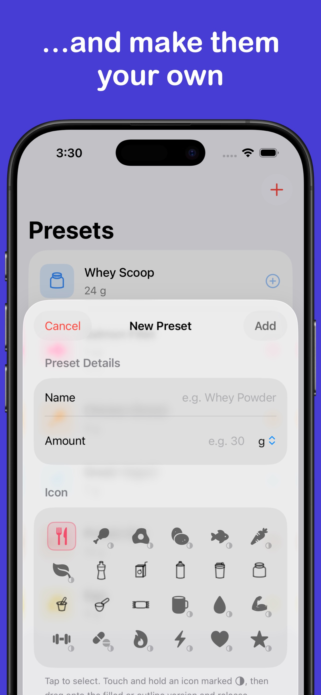
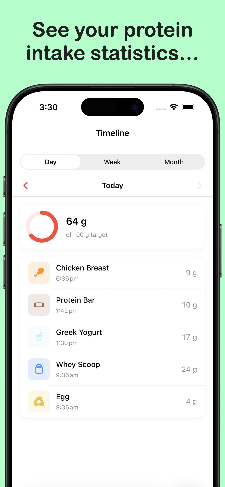
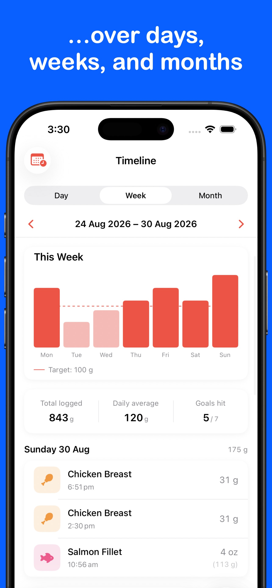
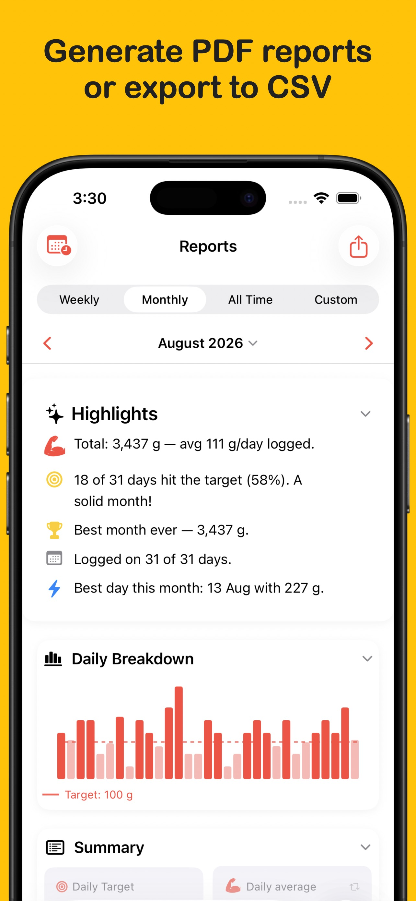
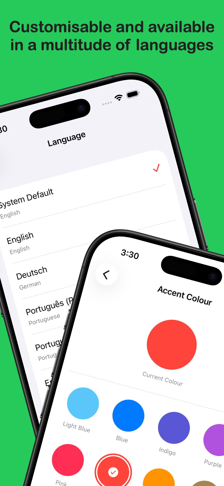
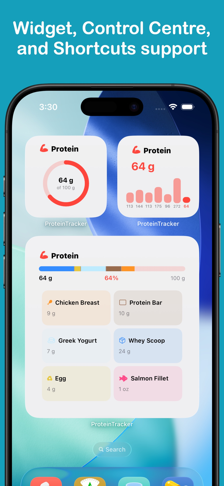

ProteinTracker
Protein made easy.
ProteinTracker makes hitting your protein requirements easy — set your target, and log away.
Download from the App Store todayScreenshots









Features
- Easy logging Custom presets mean most days you're just a single button away from logging your morning shake or that chicken breast at dinner - and manual logging is almost just as simple.
- Timeline & reports Weekly and monthly charts, streaks, and records give you a clear view of your intake over time.
- Apple Health sync Every log writes to Apple Health as a Dietary Protein sample. ProteinTracker can also read your Apple Health data from other apps.
- Daily target & reminders Set a daily goal or use the built-in calculator for a personalised recommendation based on your body weight. Get reminders to keep your intake on track throughout the day.
- Apple Watch app Log protein with ease from your wrist.
- Home Screen widgets See your progress ring, log a preset, or view a weekly bar chart — all without opening the app.
More from LifeTracker Studio

VitaminTracker
Stay on top of your vitamins and nutrients.
View app →
WaterTracker
Log your water in one tap and stay hydrated.
View app →
HabitTracker
Build lasting habits and track your daily routines.
View app →
WeightTracker
Set goals and achieve your target weight.
View app →FitnessTracker
Schedule and record your workouts with ease.
View app →